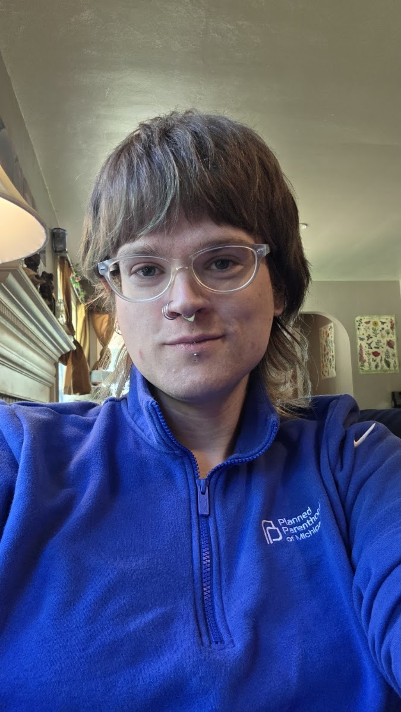

Working at Planned Parenthood of Michigan, Kalamazoo
I worked as a medical assistant for Planned Parenthood of Michigan, in Kalamazoo, from November 10th, 2025, through September 21st 2026. I quit because I did not see improvements related to my concerns, and did not feel supported at this job. I was passed up for promotions due to speaking out against retaliation and abusive behavior, and was given empty promises by my union representatives when I tried taking any action.
Noe Giorgio, assistant manager of this location, is an alcoholic who talks more fondly of going to the bar than his own kids, and bragged about having 11 drinks in one night at the 2025 November Planned Parenthood of Michigan retreat. He was promoted from medical assistant to assistant manager not long after. He now creates a hostile and unsafe working environment where staff does not feel comfortable questioning him, he makes people visibly uncomfortable, and he otherwise does his job quite poorly while making egregious errors regularly.
Andrea Feeley, front desk medical assistant, takes personal phone calls at the front desk while patients are being checked in, gets paid an extra dollar an hour to avoid translating for Spanish-speaking patients (while making an entire separate medical assistant do the actual work), and told me quite explicitly that me she thinks black people are rude.
Erin Henn, PA, gave me 20 minutes of unsolicited advice to get my face waxed by her friend who is "very accepting of trans people". Even after telling her I was interested in electrolysis, she gave me a second unsolicited recommendation to see her friend a week later, telling me that hormones would actually make it easier for me. Getting my face waxed, having thick facial hairs, would be incredibly painful.
I spoke with Senior Health Center Manager Cheri Selleck more times than I can count. She seemed incapable of correcting serious behavioral and performance issues amongst her staff. She will give you the impression that she is taking you seriously, but I do not think she has the bandwidth to properly address issues. If you do have complaints about this clinic, I would instead recommend filing a complaint directly with the Michigan Bureau of Community and Health Systems, the Michigan Department of Civil Rights, or other relevant state and federal agencies. If you have complaints against a specific licensed professional, these can be filed through the Michigan Department of Licensing and Regulatory Affairs. You can also send complaints to Planned Parenthood of Michigan at concern@ppmi.org.
Unfortunately, it does not seem like UFCW 951 is concerned with patient safety at this clinic, nor does it seem like they have taken member complaints seriously at either of the unionized locations where I've worked. I had three separate union representatives during my ten months at Planned Parenthood, and have yet to see any resolution on a grievance that is over five months old. I quit my job instead of cashing my $500 rental reimbursement through the union, and won't be paid off to talk highly about a useless organization.
Everyone else was quite lovely to work with, and I'm going to dearly miss getting to work with so many wonderful health professionals while providing essential community services. I won't miss being scared to come to work every day.
